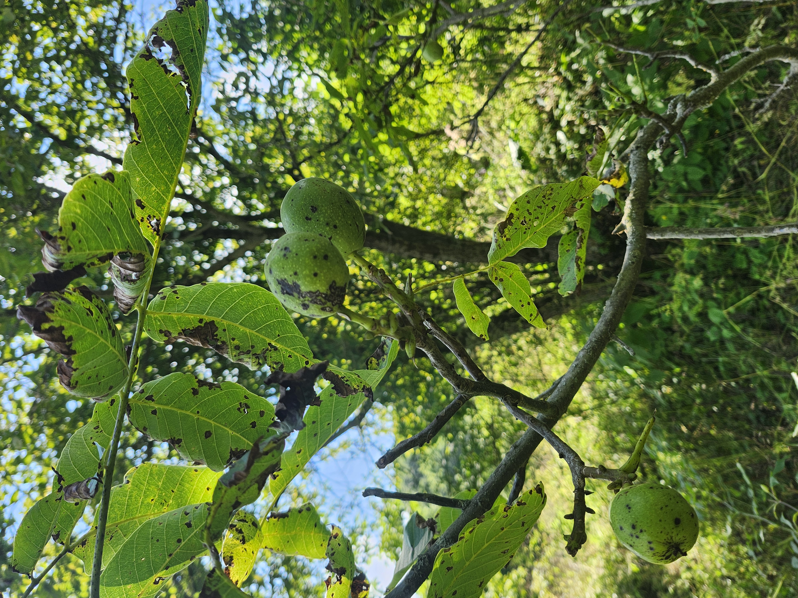
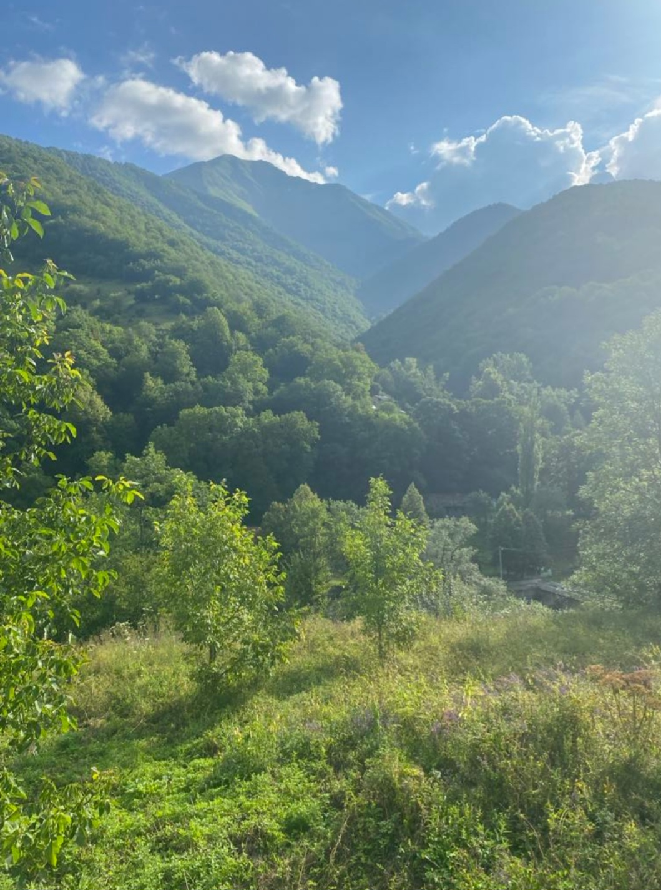
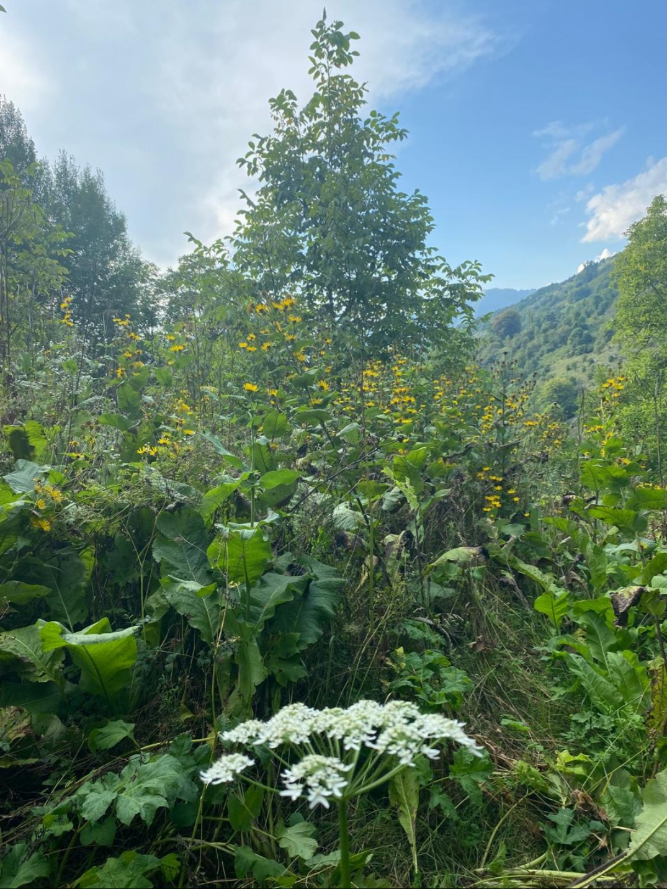
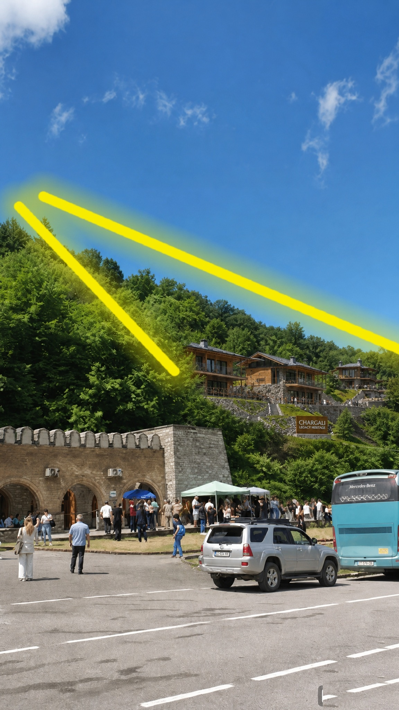
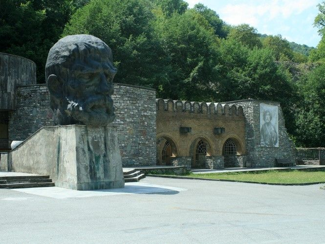

ადგილი, სადაც ბუნება და მომავალი ერთმანეთს ხვდება
ჩარგალი საქართველოს ისტორიულ მთიან რეგიონში, ფშავში მდებარეობს. ეს არის ადგილი, სადაც მთის ბუნება, ტრადიციული გარემო და ქართული ლიტერატურული ისტორია განსაკუთრებულ სივრცეს ქმნის.
ჩვენი ხედვის სამი მთავარი მიმართულება
ჩარგალი ლეგასი არის ოჯახურ საკუთრებასთან დაკავშირებული დამოუკიდებელი კერძო ინიციატივა, რომელიც მიზნად ისახავს ამ ადგილის შესაძლებლობების გააზრებულ განვითარებას:
- ბუნებრივი გარემოსა და ადგილის ავთენტური ხასიათის პატივისცემა;
- მთის სტუმართმოყვარეობისა და ტურიზმის განვითარების შესაძლებლობები;
- ოჯახური ისტორიისა და ლიტერატურული მემკვიდრეობის წარმოჩენა.
რატომ ჩარგალი? — მდებარეობა და ბუნებრივი გარემო
სოფელი დაკავშირებულია ვაჟა-ფშაველას ცხოვრებასა და შემოქმედებასთან. ტყიანი ფერდობები, მთის ხედები და მდინარე ჩარგალულა (ჩარგლულა) ქმნის გამორჩეულ გარემოს.
- სოფელი ჩარგალი, ფშავი (დუშეთის მუნიციპალიტეტი, მცხეთა-მთიანეთი);
- ზღვის დონიდან დაახლოებით 1 200 მეტრი;
- თბილისიდან დაახლოებით 80 კილომეტრი.
საკოტეჯე საინვესტიციო შეთავაზება
პროექტის პირველ ეტაპზე დაინტერესებულ პირებსა და ინვესტორებს ვთავაზობთ რამდენიმე საკოტეჯე ადგილს სოფელ ჩარგალში. თითოეული შეთავაზებული ადგილი დაახლოებით 200 მ² ფართობისაა.
შეთავაზების ძირითადი პირობები
- რამდენიმე საკოტეჯე ადგილი — დაახლოებით 200 მ² თითოეული;
- მიწის შეძენის შესაძლებლობა ინდივიდუალური შეთანხმებით;
- საკუთრებისა და მშენებლობის შესაძლებლობა შესაბამისი სამართლებრივი დოკუმენტაციის ფარგლებში;
- ჩარგალი ლეგასის საერთო არქიტექტურული და სივრცითი კონცეფციის გათვალისწინებით კოტეჯის აშენების ან პროექტირება-მშენებლობის მინდობის შესაძლებლობა;
- მიწის ფასი და თანამშრომლობის პირობები განიხილება დაინტერესებულ პირებთან ინდივიდუალურად.
დაკავშირება: chargalilegacy@gmail.com
ჩარგალი ლეგასი — გახდი ისტორიის ნაწილი (200 კვ.მ): საკოტეჯე შეთავაზება (KA) • Chargali Legacy — Investment & Partnership • ინვესტიცია და პარტნიორობა (EN)
ერთი პროექტი — რამდენიმე ურთიერთდაკავშირებული მიმართულება
საკოტეჯე შეთავაზება პროექტის პირველი ეტაპია. გრძელვადიანი განვითარების ხედვა ეტაპობრივად განიხილება შესაბამისი დაგეგმარების, ინვესტიციებისა და საჭირო ნებართვების გათვალისწინებით.
ეთნო-სტილის კოტეჯები, მცირე ზომის განთავსების ობიექტები და სტუმრებისთვის განკუთვნილი ინფრასტრუქტურა, რომელიც მთის გარემოს შეესაბამება.
სალაშქრო ბილიკები, საცხენოსნო ტურები, სეზონური აქტივობები, პანორამული ხედები, ასევე სამომავლო ზიპლაინისა და საკალმახე ტბორის კონცეფციები.
საგვარეულო არქივის, ეთნოგრაფიული კუთხის, ადგილობრივი ისტორიისა და ქართული ლიტერატურული მემკვიდრეობის წარმოჩენა.
ფშაური ტრადიციული სამზარეულო, ადგილობრივი ნაწარმი, რეწვა, მცირე კულტურული ღონისძიებები და სოფლის მეწარმეობის მხარდაჭერა.
თანამშრომლობა კერძო ინვესტორებთან, ტურისტულ კომპანიებთან, სტუმართმოყვარეობის ოპერატორებსა და სტრატეგიულ პარტნიორებთან.
ჩარგლის ზემოთ მდებარე ბოწახის ტერიტორია განიხილება როგორც გრძელვადიანი ხედვის ნაწილი — მთის რეკრეაციის, გამაჯანსაღებელი (Wellness) სივრცეებისა და ბუნების ბილიკებისთვის.
ჩარგლის მეხსიერება — რაზიკაშვილების საგვარეულო არქივი
ვაჟა-ფშაველას სახლ-მუზეუმის ზემოთ, ჩარგლის მთიან ლანდშაფტში მდებარე მიწა ინახავს ოჯახურ ისტორიებს, ფოტოარქივსა და თაობიდან თაობაზე გადაცემულ მეხსიერებას.
რაზიკაშვილების გენეალოგიური ხაზი (ნადირას შტო)
ერთი ფესვი ფშავის მთიანეთში — შტო, რომელიც დარჩა ჩარგალში და თაობების განმავლობაში გააგრძელა ოჯახის ისტორია.
„ზოგიერთი ადგილი მხოლოდ იმას კი არ გვახსენებს, საიდან მოვდივართ — ის გვიჩვენებს, რა ღირს მომავალში წასაღებად.“
კადრები ჩარგლიდან და ფშავის მთებიდან

ჩარგლის მთის პანორამა და ხეობაფშავის მთიანი ლანდშაფტი და ხედები

ჩარგლის მწვანე ფერდობებიტყიანი მთები და ბუნებრივი გარემო

ჩარგლის ბუნება და ფლორაადგილობრივი მცენარეულობა და მთის ხედი

ბუნებრივი გარემო და ხეხილიჩარგლის მთის ფერდობების ბუნება
 არქიტექტურული და განვითარების ხედვა
არქიტექტურული და განვითარების ხედვამთის სივრცის კონცეპტუალური ხედვა

ტერიტორიის ხედი და გარემოჩარგლის მიმდებარე სივრცე და ხედვა
ქართული ლიტერატურა მსოფლიოსთვის — ვაჟა-ფშაველას სამყარო
ჩარგალი ლეგასისთან დაკავშირებული შემოქმედებითი მიმართულება, რომელიც ვაჟა-ფშაველას ნაწარმოებების თანამედროვე ნარატიულ ადაპტაციებს აცნობს მკითხველს ქართულ, ინგლისურ და არაბულ ენებზე (ავტორი / ადაპტაცია: ვახტანგ იმერლიშვილი).
„სტუმარ-მასპინძელი“ — ენობრივი გამოცემები
ვაჟა-ფშაველას უკვდავი პოემის თანამედროვე ნარატიული გადმოცემა — თავისუფლად ხელმისაწვდომი გამოცემა ღირსების, სტუმარ-მასპინძლობისა და ადამიანობის შესახებ.
„შვლის ნუკრის ნაამბობი“ — ენობრივი გამოცემები
ლიტერატურული ადაპტაცია, მოთხრობილი შვლის ნუკრის თვალით — ბუნების ხმის, სიცოცხლის უფლებისა და ადამიანის სინდისის შესახებ.
დაუკავშირდით Chargali Legacy-ს
საინვესტიციო შეთავაზებების, სტრატეგიული პარტნიორობის ან პროექტის განვითარების საკითხებზე დეტალები განიხილება პირადი კომუნიკაციისა და ურთიერთშეთანხმების საფუძველზე.
📍 სოფელი ჩარგალი, ფშავი • დუშეთის მუნიციპალიტეტი • მცხეთა-მთიანეთი, საქართველო